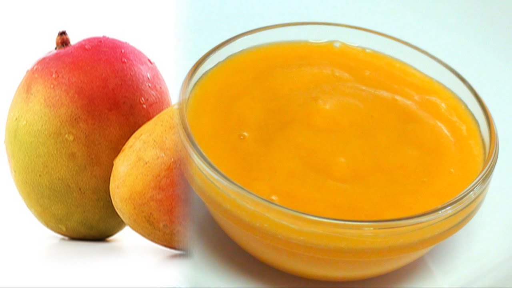

How To Get Pulp From Mangoes?

Instructions:
- Cut off all the fruit flesh around the core and discard the peel, you can cut the mango into chunks.
- Then place the mango flesh in a mixer/blender and just mix to a smooth paste. Don’t add water or sugar and flavoring. Keep it natural and simple, to use it further in other dishes.
- To store the mango pulp/puree, keep a few vacuum zip bags ready or store in ice cube trays so that the pulp takes a square shape. Fill the zip-lock bags with the pulp, close and place into the freezer.
- Take out whenever needed and use further in your food preparation.
<